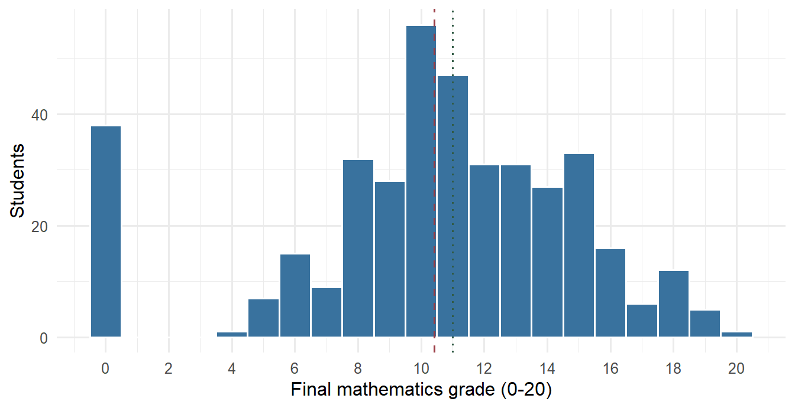
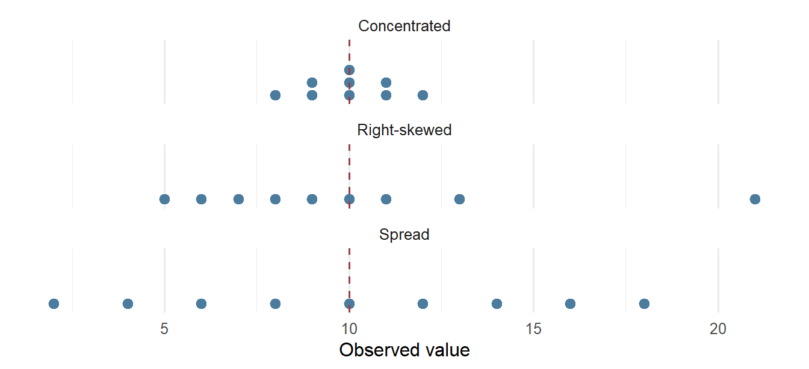
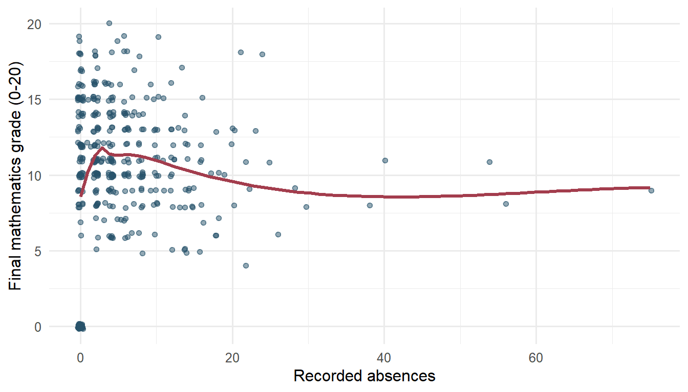
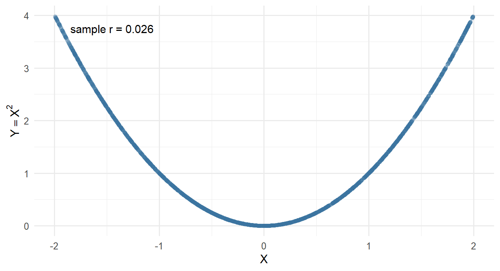
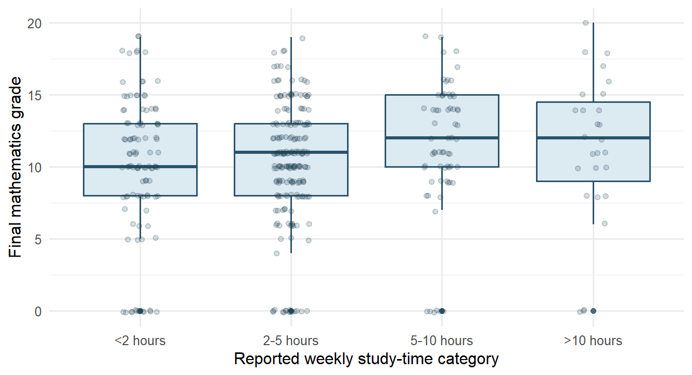
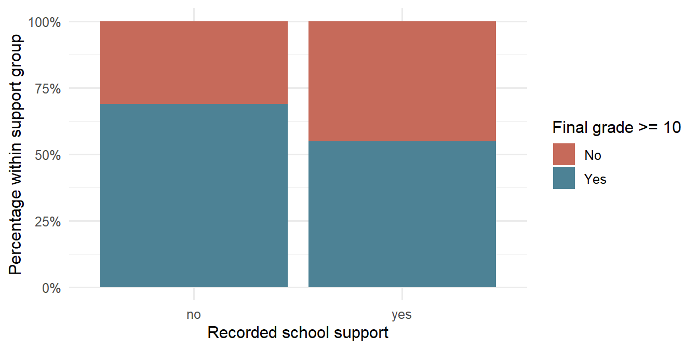
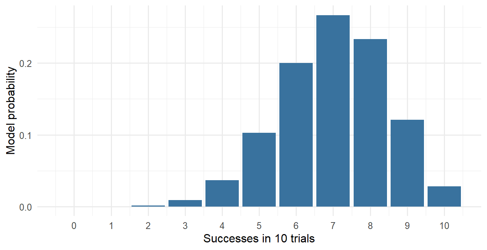
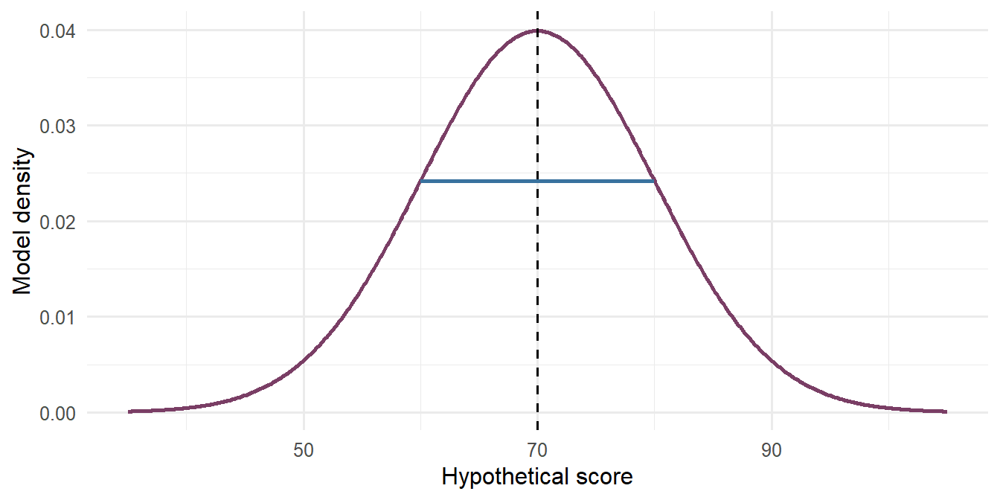
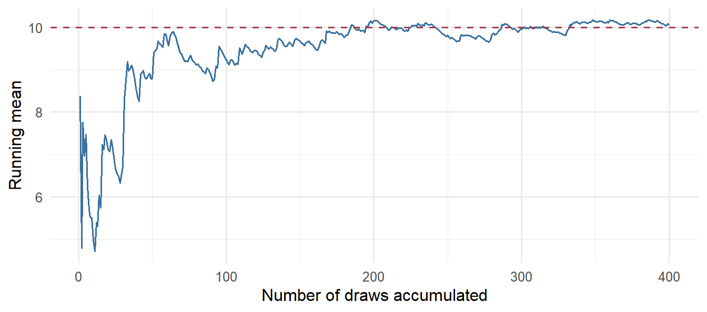
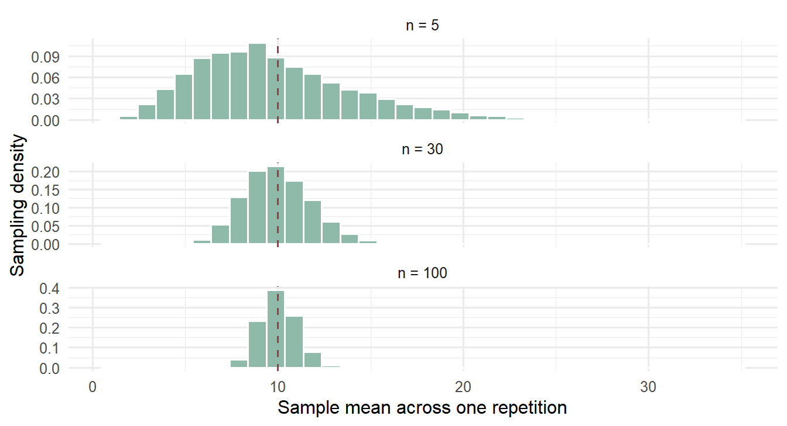

| Student ID | Study-time category | Absences | Final grade | Pass |
|---|---|---|---|---|
| U001 | 2-5 hours | 6 | 6 | No |
| U002 | 2-5 hours | 4 | 6 | No |
| U003 | 2-5 hours | 10 | 10 | Yes |
| U004 | 5-10 hours | 2 | 15 | Yes |
| U005 | 2-5 hours | 4 | 10 | Yes |
| U006 | 2-5 hours | 10 | 15 | Yes |
Describing Data, Relationships, Probability, and Sampling
TipChapter box
Research question: Among the 395 students recorded in two Portuguese secondary schools, what descriptive relationship is visible between absences and final mathematics grade?
Analytic status: Exploratory; no prospective hypothesis is claimed.
Evidence and inference: The observational records provide absence counts and final grades on the documented 0–20 scale, with no missing values in the source data (Cortez, 2008). All 395 records are retained. A scatterplot with a smooth curve, Pearson’s correlation, and Spearman’s rank correlation examine linear, monotone, and possible nonlinear features of the realized association.
Bounded answer: Pearson’s \(r\) and Spearman’s rank correlation are both near zero, so these records show little overall linear or monotone association. The scatterplot remains necessary because neither coefficient rules out nonlinear or subgroup patterns. The evidence does not support a causal effect or generalization beyond these students.
Opening Problem
A brief school report makes a confident claim:
Recorded absences were almost uncorrelated with final mathematics grades, so attendance does not matter for achievement.
The sentence sounds quantitative, but it compresses several different questions. What does one observation represent? How were absences and grades recorded? How were the students selected? Is the relationship linear, monotone, nonlinear, or different across subgroups? Most importantly, can a small observational correlation establish what would happen if attendance changed? Answering that last question needs a design that supports a causal contrast, not a longer list of summaries (Shadish et al., 2002).
Chapter 1 showed that a quantitative question needs a traceable statistical argument and a substantive argument. Here that structure is applied to one exploratory relationship question. The statistical argument describes the observed association through complementary summaries; the substantive argument asks what that pattern can mean in the educational setting without exceeding the observational design.
The curated student-performance data contain 395 observations from two Portuguese secondary schools (Cortez, 2008). Absences range from 0 to 75, and final grade is documented on a bounded 0–20 scale with no missing values. The 38 recorded zeros fall within that documented scale and are retained without recoding because no alternative coding rule is documented. Pearson’s \(r\) is 0.034 and Spearman’s rank correlation is 0.018. Their agreement near zero, together with the scatterplot and observational design, shows both what the records say and why the headline outruns its evidence.
This chapter develops the reasoning needed before formal inference. It begins with the analytic table, describes individual variables and relationships, uses probability models to state assumptions precisely, and then imagines repeated samples. The goal is not to calculate every available summary. It is to choose summaries that answer a declared question and to keep the resulting claim within the design and data.
NoteWhere this chapter sits in the workflow
The proposal decisions in Frame the research question and candidate answer and Plan design, measurement, and method of inference determine what must be observed and summarized. The worked analysis then emphasizes Conduct the study and collect or acquire data and contextual information, Conduct statistical estimation, checking, and analysis, and Contextualize, justify, and interpret substantively. The closing record supports Synthesize across questions: implementation phase. The most consequential evaluation lenses here are Evidence integrity, Inferential adequacy, Transition fidelity, and Claim calibration.
NoteA mechanism to carry through the chapter
A statistic from one sample cannot reveal by itself how stable it would be in another sample. Repeated sampling holds a target process and sampling rule fixed, draws new samples, and recalculates the statistic. The resulting sampling distribution exposes modeled variation. Its standard error can quantify that source of uncertainty, but it cannot repair weak measurement, selection, or causal design.
Understanding the Evidence
Cases, units, and occasions must be distinguished
An analytic table is a rectangular representation in which observations identify units or occasions and variables record their characteristics. Classical texts require both to be named before any calculation (Moore et al., 2014). The intended unit matters: a table can contain repeated records for one person, school-level values attached to students, or several waves for each participant. Before describing anything, identify what one observation means and whether the same unit appears more than once (Wickham, 2014).
The first six observations from the public data source, shown in Table 1, illustrate several forms of information.
student_id labels a unit but is not an outcome to average. study_time uses ordered numeric codes to represent categories; subtracting code 1 from code 4 does not prove that the underlying study-time difference is three equal units. absences is a count. final_grade is a bounded quantitative score on its original 0-20 scale. pass is derived from the convention that a final grade of at least 10 counts as passing and therefore contains no new information about the score until a decision explicitly needs that threshold.
Variable form and substantive role are separate
A variable has a recorded form and a role in a particular question. Classical treatments separate categorical variables, which place a case into a group, from quantitative variables, which take numerical values for which arithmetic is meaningful (Moore et al., 2014); social-science texts refine the categorical side into nominal and ordered categories (Agresti, 2018). The same variable can be an outcome in one analysis, a predictor in another, or a description of the sample in a third. Its role does not by itself establish causal status, and Table 2 keeps the three labels apart.
| Audit feature | Examples | Why it matters |
|---|---|---|
| Identifier | student ID | Checks uniqueness; usually not analyzed as a quantity |
| Quantitative | final grade, absences | Units and scale determine meaningful differences |
| Nominal categorical | school, support status | Categories need labels and an explicit reference or denominator |
| Ordered categorical | study-time category | Order is meaningful; equal spacing may not be |
| Derived variable | pass from final grade | The rule should be documented and sensitivity to the threshold considered |
| Question-specific role | outcome, predictor, grouping variable | A statistical role is not a design-based causal label |
Rigid scale labels can distract from the real decisions. Ask instead what values mean, which comparisons are defensible, whether distances are meaningful, and how the variable was produced. Treating an ordered code as continuous may sometimes be a useful approximation, but it must be argued, not inferred from the storage format.
Coding is part of the analysis
Values such as 0, 9, 99, and a blank cell can mean a real zero, a category, refusal, not applicable, or missing. A data dictionary should state:
- the observational unit and time point;
- the variable label, storage type, and units;
- allowable values and category meanings;
- how missing values are encoded;
- whether the variable was recorded directly or derived;
- any range, skip-pattern, or consistency rule.
An impossible age, duplicated identifier, or final score recorded for a student who never completed follow-up is not an “outlier problem.” It is a data-quality question requiring a traceable resolution, because a reported result is only as reconstructible as the record of the decisions that produced it (National Academies of Sciences, Engineering, and Medicine, 2019). An unusual but valid case should not be deleted simply because it changes a summary.
Missingness changes the evidence behind a summary
The synthetic foundations study deliberately contains several stages. All 360 fictional students were invited. Consent was more likely for students with higher baseline scores. Only consenting students were randomly assigned to a program, and not every participant completed follow-up.
| Stage | n | Percent |
|---|---|---|
| Invited | 360 | 100.0% |
| Consented | 271 | 75.3% |
| Completed follow-up | 216 | 60.0% |
| Final score recorded | 216 | 60.0% |
Table 3 records how the denominator narrows. A mean baseline score can use all invited cases because baseline is complete. A mean final score uses only 216 completers. That smaller denominator is not merely a software detail: follow-up completion depends partly on attendance and program in the known generating process. Consequently, the complete-case distribution describes a selected subset. It does not automatically redefine the intended target population: any move from that subset to the original target requires a missingness assumption and an appropriate method.
The symbol NA means “not available to this analysis,” not zero. It also does not reveal why the value is unavailable. Reporting standards therefore ask for the flow of cases from invitation to analysis, together with the amount and handling of missing data (Appelbaum et al., 2018). A defensible report names the denominator and the rule that produced it:
Among the 216 fictional students with recorded follow-up scores, the mean final score was 74.60 points.
This is better than “the mean score was …” because it makes the analytic population visible.
A compact evidence audit before calculation
The six checks below are a local working device within Evidence integrity. They help establish STAT-E and STAT-J; they do not create a new framework or replace the seven evaluation lenses.
- State the observational unit and check whether identifiers are unique.
- Match every variable to a definition, unit, allowable range, and missing code.
- Count cases at the invitation, response, eligibility, and analysis stages.
- Check impossible combinations and derived-variable rules.
- Declare the denominator for every planned percentage, graph, or summary.
- Reconnect the resulting analytic sample to the design and intended claim.
Software can automate counts, but it cannot decide which unit, code, or denominator answers the research question.
Describing Distributions Honestly
A distribution is an organized account of values
The sample distribution of a variable records which values occurred and how frequently. The classical strategy is to plot the data first, describe the overall pattern by shape, center, and spread, and only then note striking deviations such as outliers (Moore et al., 2014). This chapter states that strategy as five linked features:
- shape: symmetric or skewed, unimodal or multimodal, continuous-looking or heaped;
- center: where typical values lie;
- spread: how far cases differ;
- unusual observations: values separated from most of the sample;
- substantive scale: units, bounds, and meaningful reference points.
The final mathematics grades are bounded at 0 and 20 and recorded as whole numbers. A histogram should preserve those facts, as Figure 1 does.

The sample mean is 10.42, the median is 11, and the standard deviation (SD), a measure of spread expressed in the original grade points, is 4.58. Those numbers summarize the recorded cases; they do not imply that a Normal model generated the grades.
Center answers a particular question
For observations \(x_1,\ldots,x_n\), the sample mean is
\[ \bar{x}=\frac{1}{n}\sum_{i=1}^{n}x_i. \]
It is the balance point of the observed values and uses every numerical distance. The median \(M\) is a positional summary: order the observations and take the value in position \((n+1)/2\), averaging the two central values when \(n\) is even, so that half the ordered observations are at or below \(M\) and half are at or above it (Moore et al., 2014). The mode is the most frequent recorded value or category.
These summaries answer different questions. The mean is useful when additive differences and totals matter. The median describes a middle position and is resistant in the classical sense: a single extreme value can move the mean arbitrarily far but changes the median very little (Moore et al., 2014). The mode can be meaningful for a categorical variable. None is universally “best,” and reporting only one can hide the shape of the data.
Spread is not an optional decoration
The range uses only the minimum and maximum. Quantiles use positions in the ordered sample: the quartiles \(Q_{0.25}\) and \(Q_{0.75}\) bracket the middle half of the ordered data, and the classical rule takes each as the median of one half of the observations (Moore et al., 2014). Software interpolates between order statistics, so reported quartiles can differ slightly from the hand rule; the values here use R’s default type-7 interpolation (R Core Team, 2025). The interquartile range (IQR), the width of that middle half, is
\[ IQR=Q_{0.75}-Q_{0.25}. \]
The sample variance and sample standard deviation are
\[ s^2=\frac{1}{n-1}\sum_{i=1}^{n}(x_i-\bar{x})^2, \qquad s=\sqrt{s^2}. \]
| Variable | n | Mean | Median | SD | IQR | Minimum | Maximum |
|---|---|---|---|---|---|---|---|
| Final grade | 395 | 10.42 | 11.00 | 4.58 | 6.00 | 0.00 | 20.00 |
| Absences | 395 | 5.71 | 4.00 | 8.00 | 8.00 | 0.00 | 75.00 |
The SD returns to the original measurement units; the variance is in squared units. The denominator \(n-1\) is the degrees of freedom of \(s^2\): the \(n\) deviations from \(\bar{x}\) must sum to zero, so only \(n-1\) of them can vary freely. Under independent and identically distributed sampling from one population with finite variance \(\sigma^2\), the corresponding expectation calculation gives \(E(s^2)=\sigma^2\) (Moore et al., 2014). The zero-sum identity explains the lost degree of freedom; it is not, by itself, a proof of unbiasedness.
This correction is not the finite-population correction. Define the finite-population variance as
\[ S_N^2=\frac{1}{N-1}\sum_{i=1}^{N}(y_i-\bar y_N)^2. \]
Under simple random sampling without replacement of \(n\) units from those \(N\) units,
\[ SE(\bar Y)=\sqrt{\left(1-\frac{n}{N}\right)\frac{S_N^2}{n}}. \]
The factor \(\sqrt{1-n/N}\) reduces the usual \(S_N/\sqrt n\) expression when the sampling fraction is not negligible (Moore et al., 2014). The two corrections solve different problems.
Absences show why several summaries matter (Table 4). The median is 4, the mean is 5.71, and the maximum is 75. A large right tail pulls the mean upward. The maximum should be checked against the source definition, but it should not be erased merely for being influential.
Equal means can hide different empirical worlds
The three small distributions in Figure 2 all have mean 10. They do not have the same median, SD, shape, or practical interpretation.

A mean without a graph and spread can make these distributions look interchangeable. A graph without units, denominator, or transparent axes can mislead in a different way.
Honest displays preserve the comparison
Match the graph to the variable and question, as Table 5 sets out.
| Question | Useful display | Required checks |
|---|---|---|
| Distribution of one quantitative variable | dotplot, histogram, density plot, boxplot | bin width, bounds, heaping, all cases, units |
| Distribution of one categorical variable | count or percentage bar chart | denominator, missing category, zero baseline |
| Two quantitative variables | scatterplot | range, overlap, nonlinear form, overplotting, unusual cases |
| Quantitative outcome across categories | jittered points, boxplots, violin/density plus summaries | group sizes, same scale, within-group distributions |
| Two categorical variables | counts plus conditional-percentage bars | event, reference group, conditioning denominator |
Histogram shape depends partly on bin width. Boxplots compactly show a median, quartiles, and flagged points, but they can conceal multimodality and sample size. In the classical modified boxplot the whiskers stop at the most extreme observations lying within \(1.5\times IQR\) of the quartiles, and points beyond that distance are drawn individually as suspected outliers (Moore et al., 2014). Bar charts for counts or percentages ordinarily begin at zero because bar length encodes magnitude (Çetinkaya-Rundel & Hardin, 2024). Truncated axes may sometimes reveal small differences in point-and-interval plots, but the scale break must be explicit and the substantive size must remain visible.
An outlier flag is a request for investigation, not an instruction to delete: the classical advice is to look for observations outside the overall pattern and try to explain them (Moore et al., 2014). Verify the record, compare analyses transparently when justified, and explain how the case affects the result.
Relationships Across Variable Types
Begin with the pair of variable forms
A relationship is always a relationship between specified variables in a specified sample. The useful first display depends on their forms:
\[ \begin{array}{c|c} \text{Variable pair} & \text{Starting description} \\ \hline \text{quantitative - quantitative} & \text{scatterplot and conditional pattern} \\ \text{quantitative - categorical} & \text{within-group distributions and contrasts} \\ \text{categorical - categorical} & \text{two-way counts and conditional percentages} \end{array} \]
The order of analysis is stable: state the question and units, show the data, summarize a pattern, inspect unusual cases and support, then bound the claim.
Quantitative - quantitative: form before coefficient
A scatterplot should be read for direction, form, strength, unusual cases, and the range of observed support; that reading order is the classical one for a pair of quantitative variables (Moore et al., 2014). Figure 3 uses horizontal and vertical jitter because both variables are discrete.

The Pearson sample correlation is
\[ r=\frac{\sum_i(x_i-\bar{x})(y_i-\bar{y})} {\sqrt{\sum_i(x_i-\bar{x})^2}\sqrt{\sum_i(y_i-\bar{y})^2}}, \qquad -1\le r\le 1. \]
Equivalently, \(r\) is the average product of standardized values,
\[ r=\frac{1}{n-1}\sum_{i=1}^{n} \left(\frac{x_i-\bar{x}}{s_x}\right) \left(\frac{y_i-\bar{y}}{s_y}\right), \]
which is the form used in classical presentations and shows directly why the coefficient has no units (Moore et al., 2014). Both variables must be quantitative. It summarizes the direction and strength of a linear sample association and is unchanged by swapping \(X\) and \(Y\) or by changing the units of either variable. In this sample, \(r=0.034\). That value does not mean absences are unrelated in every sense, does not show that the population correlation is zero, and does not estimate the causal consequence of preventing an absence.
Like the mean and the SD, \(r\) is not resistant: it can be distorted by a few unusual points, restricted ranges, mixtures of groups, and nonlinear patterns (Moore et al., 2014). Always read it with the scatterplot and the sampling/design story.
The source documentation defines final grade on the 0–20 scale and reports no missing values (Cortez, 2008). The 38 grades recorded as zero are therefore retained under the documented coding rather than recoded or excluded; the documentation does not independently establish what produced each zero. With all 395 students included, Pearson’s correlation is 0.034 and Spearman’s rank correlation is 0.018. Pearson’s coefficient targets linear association; Spearman’s coefficient targets monotone association through the ranks and is less driven by numerical spacing and unusually large absence counts. Both are near zero. Their agreement supports a narrow claim of little overall linear or monotone association in these records, while the scatterplot and smooth curve remain necessary for detecting nonlinear form, clusters, or sparsely supported parts of the absence range.
Zero correlation does not imply independence
Let \(X\) be generated symmetrically between -2 and 2 and set \(Y=X^2\). Knowing \(X\) determines \(Y\), so the variables are deterministically dependent. Yet the positive-\(X\) and negative-\(X\) linear components cancel, producing the near-zero correlation reported in Figure 4.

Under suitable finite-moment conditions, independence implies zero covariance and hence zero Pearson correlation (Cramér, 1946). The converse is generally false. Correlation is therefore not a general test of independence.
Quantitative - categorical: retain the within-group data
The study-time variable consists of four ordered categories. Compare the entire grade distributions and group sizes before comparing only means; the classical display for a quantitative variable across groups is a set of side-by-side distributions rather than a table of means alone (Moore et al., 2014).
| Study-time category | n | Mean | SD | Median | IQR |
|---|---|---|---|---|---|
| <2 hours | 105 | 10.05 | 4.96 | 10.00 | 5.00 |
| 2-5 hours | 198 | 10.17 | 4.22 | 11.00 | 5.00 |
| 5-10 hours | 65 | 11.40 | 4.64 | 12.00 | 5.00 |
| >10 hours | 27 | 11.26 | 5.28 | 12.00 | 5.50 |

The distributions in Figure 5 overlap substantially, and Table 6 shows why the overlap matters: the largest sample mean occurs in the 5-10 hour category, not the highest category, and only 27 students report more than 10 hours. A bounded description is:
In these two schools, recorded final grades tended to be somewhat higher in the two upper study-time categories, but distributions overlapped and the observational data do not identify what would happen if study time were changed.
Categorical - categorical: declare the denominator
The same count table can support percentages conditioned on support, percentages conditioned on passing, or overall percentages. They answer different questions. These are conditional distributions, and the classical instruction is to choose the conditioning variable from the question before reading any percentage (Agresti, 2018; Moore et al., 2014). For school support and pass status:
| School support | No: count | Yes: count | No: within-support % | Yes: within-support % |
|---|---|---|---|---|
| no | 107 | 237 | 31.1% | 68.9% |
| yes | 23 | 28 | 45.1% | 54.9% |
Among the 51 students recorded as receiving school support, 28 (54.9%) passed; among the 344 students without recorded support, 237 (68.9%) passed (Table 7). This local demonstration ends with a descriptive comparison. STAT-E records who was marked as supported and who passed; STAT-I reports two conditional proportions differing by 14.0 percentage points among these students. A bounded STAT-C retains the absence of a sampling model or assignment mechanism.

The observed direction does not reveal whether support helped or harmed (Figure 6). SUB-E situates the recorded comparison: support is a service the two schools allocate, and the source documentation records that a student received extra educational support without recording who decided, on what evidence, or at what point in the year (Cortez, 2008).
One plausible but unsourced explanation of the reversal is that support is directed toward students already judged to be struggling. If that were the allocation rule, prior difficulty would be a common cause of both support and passing, a pattern generally called confounding by indication. That sentence is a candidate explanation offered in this chapter, not a documented mechanism, and it is marked as unsourced here precisely so that it cannot be read later as a recorded design fact. SUB-J is therefore limited: the proposed explanation is not established support.
The data source includes past failures and two earlier grade periods, but those variables do not recover the allocation rule. Past failures are nearly equal across support groups, while the earlier grades occur within the same course year and therefore cannot separate difficulty that prompted support from an effect of support. The confounding-by-indication explanation remains plausible but unverified.
SUB-I is consequently descriptive, not causal. If the groups differ on characteristics connected to the very decision that produced the support, the gap reports their composition at least as much as anything about the service, and nothing in the evidence settles how much of each. SUB-C records that result with what the design cannot reach: these observations cannot say whether support helped, harmed, or did nothing, because support was not assigned, the allocation rule is undocumented, the recorded prior variables do not recover it, and the schools are not a probability sample of any population. Writing out what is out of range completes the structure; a stronger sentence with a caveat attached would not.
Chapter 4 develops formal categorical-association procedures. The essential prerequisite here is choosing the denominator and separating sample pattern, population generalization, and causal interpretation.
Probability as a Model of Uncertainty
Probability begins with a repeatable story
A probability is not simply an observed percentage with a mathematical symbol. It belongs to a specified model for uncertain outcomes. A probability model defines:
- the possible outcomes or sample space;
- the event of interest;
- the mechanism assigning probabilities;
- what is regarded as fixed and what is allowed to vary.
For event \(A\) in sample space \(S\), the axioms require \(0\le P(A)\le 1\) and \(P(S)=1\), together with additivity over disjoint events (Cramér, 1946). The complement rule follows:
\[ P(A^c)=1-P(A). \]
For two events, the general addition rule is
\[ P(A\cup B)=P(A)+P(B)-P(A\cap B). \]
The subtraction prevents cases in both events from being counted twice. Mutually exclusive (disjoint) events satisfy \(P(A\cap B)=0\); they cannot occur together in one trial, and for them the addition rule reduces to \(P(A\cup B)=P(A)+P(B)\) (Moore et al., 2014).
Conditional probability changes the reference set
The probability of \(A\) conditional on \(B\) is defined by
\[ P(A\mid B)=\frac{P(A\cap B)}{P(B)},\qquad P(B)>0, \]
which is the classical definition, not a derived result (Cramér, 1946). Conditioning replaces the full sample space with cases in \(B\). In a table, this is the same denominator discipline used for conditional percentages. In the student data,
\[ \widehat P(\text{pass}\mid\text{support}) =\frac{28}{51} =0.549, \]
where the hat emphasizes an empirical sample proportion rather than a known population probability. The corresponding proportion among students without recorded support is \(237/344=0.689\).
The multiplication rule rearranges the definition:
\[ P(A\cap B)=P(A\mid B)P(B). \]
It supports probability trees because each path multiplies probabilities conditional on the preceding branch, and the probabilities of mutually exclusive paths are then added (Moore et al., 2014).
Independence is a model restriction
Events \(A\) and \(B\) are independent when their joint probability factorizes:
\[ P(A\cap B)=P(A)P(B). \]
When \(P(B)>0\), this is equivalent to the conditional statement
\[ P(A\mid B)=P(A). \]
The factorization is the general definition; the conditional equality is available only when the conditioning event has positive probability (Cramér, 1946). In the observed student table,
| Quantity | Value |
|---|---|
| P-hat(pass) | 0.6709 |
| P-hat(support) | 0.1291 |
| P-hat(pass and support) | 0.0709 |
| P-hat(pass) x P-hat(support) | 0.0866 |
The empirical quantities in Table 8 differ, but the sample is not itself the complete probability model. Formal uncertainty about a population association is deferred to Chapter 4. More importantly, statistical independence is not causal independence.
Mutual exclusivity and independence are also different. If two nonzero- probability events are mutually exclusive, observing one makes the other impossible, so they are dependent rather than independent.
Probability language must name the source
Three statements can use the same number while making different claims:
- empirical proportion: 67.1% of the recorded students passed;
- finite-population proportion: 67.1% of students in a fully enumerated target population passed;
- model probability: a future outcome has probability 0.671 under a specified stochastic process.
The data alone supply the first statement. Moving to the second or third requires a population definition or model. Good probability reasoning makes that extra structure explicit.
Random Variables and Generative Models
A random variable connects outcomes to numbers
A random variable is a variable whose value is a numerical outcome of a random phenomenon: it assigns a number to each outcome in a probability model (Moore et al., 2014). A discrete random variable has countable possible values; a continuous random variable is represented over intervals. The distinction belongs to the model, not merely to whether a computer stores decimals.
A probability mass function gives \(P(X=x)\) for discrete values. A density for a continuous variable assigns probabilities to intervals as areas under a curve of total area one; the probability of one exact continuous value is zero even where the density is high (Moore et al., 2014).
The binomial model is a four-part story
If \(X\) counts successes in \(m\) trials, then
\[ X\sim\operatorname{Binomial}(m,p) \]
requires a fixed number \(m\) of trials, two coded outcomes per trial, the same success probability \(p\), and independence under the model (Moore et al., 2014). Classical texts write \(B(n,p)\); the number of trials is called \(m\) here only to keep it distinct from the sample size \(n\) used elsewhere in the chapter. Its mass function is
\[ P(X=k)={m\choose k}p^k(1-p)^{m-k}, \qquad k=0,1,\ldots,m, \]
with mean \(mp\) and SD \(\sqrt{mp(1-p)}\) (Moore et al., 2014).
Figure 7 shows a hypothetical story with 10 independent trials and \(p=0.70\). These assumptions are adopted for the demonstration, not claims learned from the student data.

The number passing among 10 students is binomial only when those 10 trials are fixed in advance, each has the same modeled pass probability, and the outcomes are independent under the model. Merely observing a group of students and counting passes does not supply those conditions; the generating story does.
The Normal model is symmetric
A Normal random variable with mean \(\mu\) and SD \(\sigma>0\) has density
\[ f(x)=\frac{1}{\sigma\sqrt{2\pi}} \exp\left[-\frac{(x-\mu)^2}{2\sigma^2}\right]. \]
The density is continuous, unimodal, and symmetric around \(\mu\), with inflection points at \(\mu\pm\sigma\) (Moore et al., 2014). The mean, median, and mode coincide under the exact model, and values equally far above and below \(\mu\) have the same density, as Figure 8 shows.

Standardizing expresses distance from the mean in SD units:
\[ Z=\frac{X-\mu}{\sigma}. \]
The value \(Z\) is the classical z-score: it counts how many SDs an observation lies above or below the mean, and under an exact Normal model \(Z\) itself has mean 0 and SD 1 (Moore et al., 2014). Standardizing changes the location and scale, not the rank or shape. An observed histogram need not be exactly Normal for a Normal approximation to be useful, and a bell-looking histogram does not prove independent Normal generation. The purpose and sensitivity of the calculation determine how close an approximation must be.
Simulation exposes assumptions; it does not validate them
A simulation follows this contract:
- state the population or stochastic process;
- identify fixed parameter values and independence assumptions;
- state the sample size and statistic;
- repeat the sampling operation many times;
- summarize what happened under those chosen assumptions;
- keep the claim conditional on the simulated process.
Simulation is now a standard way of building intuition about repeated sampling before any formula is applied (Çetinkaya-Rundel & Hardin, 2024). It can show how skewness, dependence, or sample size affects a statistic. It cannot establish that the same assumptions describe a real study. That requires design knowledge, measurement evidence, and model checking.
Sampling, Repeated Samples, and Statistical Reasoning
Population, sample, parameter, and statistic
A target population is the collection of units about which a claim is intended. A sample is the set observed under a sampling and response process. A parameter is a numerical feature of the population or model, such as a population mean \(\mu\); a statistic is a function of observed sample data, such as \(\bar X\), used to estimate a parameter. Keeping the two apart, and reserving Greek letters for parameters, is the classical convention (Moore et al., 2014). Table 9 records what each object is and whether repetition holds it fixed.
| Object | Example | Fixed or variable in repeated sampling? |
|---|---|---|
| Population/model | Distribution with mean \(\mu=10\) | Fixed by the simulation |
| One sample | \(X_1,\ldots,X_n\) | Changes across repetitions |
| Statistic | \(\bar X\) | Changes because the sample changes |
| Sampling distribution | Distribution of \(\bar X\) across repetitions | Induced by the sampling process |
The real-data example is a curated subset of the Student Performance dataset in the UCI Machine Learning Repository (Cortez, 2008), which the repository distributes under CC BY 4.0 reuse terms. It is a real sample of records from two schools, but the available documentation does not make it a probability sample of all Portuguese students or students elsewhere. How far a result travels beyond the observed cases is settled by the sampling and study design, not by the analysis (Çetinkaya-Rundel & Hardin, 2024). A large number of observations cannot repair an undefined target population or a nonprobability selection process.
Sampling variability is not a data error
Imagine repeatedly drawing samples of size \(n\) from the same population by the same procedure. Each sample produces a different mean, proportion, or correlation. The distribution of those repeated statistics is the sampling distribution: the distribution of values taken by the statistic in all possible samples of the same size from the same population (Moore et al., 2014).
The standard error (SE), the SD of a statistic’s sampling distribution and therefore a measure of how much the statistic moves from sample to sample, is the basic precision summary. For an independent sample mean from a population with finite SD \(\sigma\),
\[ SE(\bar X)=\frac{\sigma}{\sqrt n}, \]
and \(\bar X\) is unbiased for \(\mu\) under that same sampling model (Moore et al., 2014). When \(\sigma\) is unknown, \(s/\sqrt n\) estimates this quantity under the same sampling assumptions. The formula explains a square-root relationship: quadrupling \(n\) halves the idealized SE. It does not cover bias from nonresponse, measurement error, dependence, or model misspecification.
The law of large numbers concerns stabilization
Under the classical independent-and-identically-distributed (iid), finite-mean conditions, the law of large numbers says that a running sample mean becomes increasingly likely to fall within any fixed distance of \(\mu\) as the number of observations grows (Cramér, 1946; Moore et al., 2014):
\[ \bar X_n \xrightarrow{p} \mu. \]
Figure 9 begins with independent Exponential draws having population mean 10. Early running means vary substantially; later values stabilize near 10. This is one simulated sequence, not a guarantee that every later running mean is closer than every earlier one.

The law does not say that the raw observations become less variable or more Normal. It concerns stabilization of an average under a continuing sampling process.
The central limit theorem concerns shape after standardization
For independent, identically distributed observations with finite mean and variance, a classical central limit theorem states
\[ \frac{\bar X_n-\mu}{\sigma/\sqrt n} \xrightarrow{d}N(0,1) \]
as \(n\) grows (Cramér, 1946). Thus the sampling distribution of \(\bar X\) becomes approximately Normal with mean \(\mu\) and SD \(\sigma/\sqrt n\) under the stated conditions (Moore et al., 2014). This asymptotic result neither makes the raw data Normal nor supplies a universal finite-sample cutoff.
Figure 10 uses 5,000 independent samples from a strongly right-skewed Exponential population with mean and SD 10, retaining only each sample mean.

| n | Theoretical SE | Mean of sample means | Empirical SE | Skewness |
|---|---|---|---|---|
| 5 | 4.472 | 9.911 | 4.444 | 0.930 |
| 30 | 1.826 | 10.003 | 1.812 | 0.346 |
| 100 | 1.000 | 10.020 | 0.985 | 0.186 |
The sampling distributions in Figure 10 center near 10. The three panels share one horizontal scale, so the narrowing is visible directly rather than inferred: only the vertical density scale is allowed to float, and letting both axes float would have made three differently scaled pictures look alike. Their empirical SDs, reported in Table 10, track \(10/\sqrt n\), and skewness declines. But \(n=30\) is neither a theorem nor a pass/fail boundary; how large a sample must be depends on how far the population departs from Normality (Çetinkaya-Rundel & Hardin, 2024; Moore et al., 2014). Approximation quality depends on the population tails, dependence, the statistic, and the intended use. A mean from a mildly skewed population, an extreme quantile, a rare-event proportion, and a clustered sample can behave very differently at the same \(n\).
Keep three distributions separate
| Distribution | What varies? | Example | Primary question |
|---|---|---|---|
| Data distribution | Recorded values across observed units | 395 final grades | What does this sample contain? |
| Probability distribution | Hypothetical outcome under a model | \(X\sim N(70,10^2)\) | What outcomes does the model make more or less probable? |
| Sampling distribution | A statistic across repeated samples | means from 5,000 samples | How would the statistic vary under the sampling model? |
Confusing the objects in Table 11 creates familiar errors. A Normal sampling distribution of a mean does not make the individual observations Normal. A Normal-looking histogram does not guarantee a Normal sampling distribution under dependence. A probability model does not describe an empirical sample until its assumptions are connected to the study.
From a sample description to a bounded claim
A coherent descriptive paragraph connects the cases and variables in STAT-E, the design and analytic support in STAT-J, the target and checks in STAT-I, and the reservations retained in STAT-C. Reporting standards ask for this combination of evidence, summaries, and limits (Appelbaum et al., 2018).
For the public observational data:
The analytic table contained 395 mathematics-course records from two Portuguese schools, with no missing values in the curated variables. Final grades on the 0-20 scale had mean 10.42, median 11, SD 4.58, and IQR 6. Absences were right-skewed (median 4, maximum 75). The Pearson sample correlation between absences and final grade was 0.034, indicating little linear sample association. Spearman’s rank correlation was 0.018, likewise indicating little overall monotone association. The scatterplot should remain primary because of discreteness, possible nonlinearity, and unusual absence counts. Grade distributions overlapped across the four reported study-time categories. All 38 recorded zeros were retained because they lie within the documented grade scale and no alternative recoding rule is documented. These summaries describe the recorded students and do not identify effects of changing absence or study time, nor do they establish generalization beyond the source schools.
Chapter 3 adds confidence intervals, tests, effect sizes, and prospective precision. Those tools deepen STAT-I and STAT-C; they do not replace the measurement, denominator, support, and scope audits that STAT-E and STAT-J supply here.
Argument Record and Three Perspectives
The four shared roles below contain all eight concise components. Reading across each role makes the corresponding statistical-to-substantive relation traceable.
| Shared role | Statistical argument | Substantive argument and transition |
|---|---|---|
| Evidence – situates | STAT-E: Absence counts and documented 0–20 final grades for all 395 students in two Portuguese schools; the source reports no missing values. | SUB-E: The observations concern recorded attendance and mathematics attainment in one school context; it situates the variables, students, setting, and time represented by STAT-E. |
| Justification – augments and evaluates | STAT-J: Pearson’s \(r\) describes linear sample association, Spearman’s coefficient describes rank-based monotone association, and the scatterplot checks visible form and support. No probability sampling, assignment, or superpopulation model supports wider inference. | SUB-J: Measurement and design information augments and evaluates STAT-J: absence counts do not reveal missed instruction, grades are bounded, and the observational source supplies no basis for a causal effect. |
| Inference – interprets | STAT-I: Across the same 395 records, Pearson’s \(r\) is 0.034 and Spearman’s rank correlation is 0.018; no interval or test is attached. | SUB-I: Interpreting STAT-I with the scatterplot, the records show little overall linear or monotone association, but these summaries do not exclude nonlinear or subgroup patterns and do not estimate the effect of preventing absence. |
| Claim – bounds and calibrates | STAT-C: Among all 395 recorded students, Pearson’s r was 0.034 and Spearman’s rank correlation was 0.018. Both are near zero, so the records show little overall linear or monotone association. This exploratory description does not rule out nonlinear or subgroup patterns and is not a wider-population or causal estimate. | SUB-C: Among these recorded students, Pearson’s \(r\) was 0.034 and Spearman’s rank correlation was 0.018, indicating little overall linear or monotone association. The answer is exploratory, retains possible nonlinear or subgroup structure, and is limited to a noncausal description of these students. STAT-C bounds and calibrates this answer. |
Argument perspective
STAT-E and STAT-J jointly support STAT-I, which supports the bounded STAT-C. The substantive argument is logically parallel: SUB-E and SUB-J support SUB-I, which supports SUB-C. The transitions have distinct roles: SUB-E situates STAT-E, SUB-J augments and evaluates STAT-J, SUB-I interprets STAT-I, and STAT-C bounds and calibrates SUB-C.
Workflow perspective
The complete workflow is:
- Conduct the literature review
- Frame the research question and candidate answer
- Plan design, measurement, and method of inference
- Align and synthesize across questions: proposal phase
- Conduct the study and collect or acquire data and contextual information
- Conduct statistical estimation, checking, and analysis
- Contextualize, justify, and interpret substantively
- Synthesize across questions: implementation phase
This chapter concentrates on the fifth through seventh activities. Comparing the scatterplot, Pearson’s coefficient, and Spearman’s coefficient shows how checking can revisit the analytic summary without dropping observations or changing the population represented by the evidence.
Evaluation perspective
The seven lenses are Question alignment, Evidence integrity, Justification adequacy, Inferential adequacy, Transition fidelity, Claim calibration, and Cross-question coherence. For this one-question example, Evidence integrity confirms the documented grade range and retention of all records; Inferential adequacy compares graphical form with linear and rank-based summaries; Transition fidelity carries their limits into the substantive interpretation; and Claim calibration keeps the answer exploratory, noncausal, and local.
Reading Bridge
These links lead directly to publicly accessible chapters of Introduction to Modern Statistics (Çetinkaya-Rundel & Hardin, 2024) and of an open research methods text, plus the source documentation for the observational example (Cortez, 2008). They extend the discussion without replacing the vocabulary and guardrails used here.
- Introduction to Modern Statistics, Chapter 1: Hello data
- observational units, variables, data structures, and variation;
- Introduction to Modern Statistics, Chapter 2: Study design
- sampling, assignment, observational studies, and experiments;
- Introduction to Modern Statistics, Chapter 4: Exploring categorical data
- counts, proportions, and graphical comparisons;
- Introduction to Modern Statistics, Chapter 5: Exploring numerical data
- distribution shape, center, spread, and relationships;
- Introduction to Modern Statistics, Chapter 13: Inference with mathematical models
- mathematical probability models and sampling distributions;
- UCI Student Performance dataset page
- source documentation, variable meanings, DOI, and reuse terms for the observational example;
- Research Methods in Psychology: Describing Single Variables
- an additional open treatment of distributions and summaries;
- Research Methods in Psychology: Describing Statistical Relationships
- an additional open treatment of bivariate description.
While reading, mark whether each example concerns a data distribution, a probability distribution, or a sampling distribution. Then identify the observational unit, denominator, and strongest claim supported by the stated design.
References
Agresti, A. (2018). Statistical methods for the social sciences (5th ed.). Pearson.
Appelbaum, M., Cooper, H., Kline, R. B., Mayo-Wilson, E., Nezu, A. M., & Rao, S. M. (2018). Journal article reporting standards for quantitative research in psychology: The APA publications and communications board task force report. American Psychologist, 73(1), 3–25. https://doi.org/10.1037/amp0000191
Çetinkaya-Rundel, M., & Hardin, J. (2024). Introduction to modern statistics (2nd ed.). OpenIntro. https://openintro.org/book/ims/
Cortez, P. (2008). Student performance [Dataset]. UCI Machine Learning Repository. https://doi.org/10.24432/C5TG7T
Cramér, H. (1946). Mathematical methods of statistics. Princeton University Press.
Moore, D. S., McCabe, G. P., & Craig, B. A. (2014). Introduction to the practice of statistics (8th ed.). W. H. Freeman.
National Academies of Sciences, Engineering, and Medicine. (2019). Reproducibility and replicability in science. The National Academies Press. https://doi.org/10.17226/25303
R Core Team. (2025). R: A language and environment for statistical computing. R Foundation for Statistical Computing. https://www.R-project.org/
Shadish, W. R., Cook, T. D., & Campbell, D. T. (2002). Experimental and quasi-experimental designs for generalized causal inference. Houghton Mifflin.
Wickham, H. (2014). Tidy data. Journal of Statistical Software, 59(10), 1–23. https://doi.org/10.18637/jss.v059.i10
Exercises
These answer-free tasks emphasize reasoning. The two focused computing tasks may be completed in R or SPSS; syntax itself is not assessed.
Identify the evidence structure
For the student-performance example, identify the observational unit, the two variables in the focal question, their recorded scales, and the strongest population and causal scope supported by the design.
Choose a defensible description
For completion times 18, 19, 20, 20, 21, 22, 23, 24, 65, calculate the mean, median, SD, and IQR. For the quartiles, use the type-7 interpolation rule \(h=1+(n-1)p\) and interpolate linearly between the surrounding ordered values; this is R’s default. Choose a primary display and pair of summaries, justify them in minutes, and state what should be checked about 65 before any exclusion.
Separate probability from repeated sampling
Among 200 students, 120 submitted a practice quiz, 150 passed, and 100 did both. Calculate the two conditional pass proportions and assess the empirical independence factorization. Then explain why this descriptive check is neither a causal effect nor a sampling-distribution analysis.
Critique a graph and claim
A report presents an unjittered absence–grade scatterplot, adds only a straight line, and concludes, “Attendance does not matter because \(r=.034\).” Identify at least three problems in the graph or claim. Describe one improved display and write a bounded replacement claim.
Modify a relationship analysis
Using all 395 student records, reproduce an absence–grade scatterplot and then modify it to reveal overlapping integer-valued observations and possible nonlinear form. Compute both Pearson’s and Spearman’s correlations. Explain what the modified graph and second coefficient add to the original analysis.
Modify a categorical comparison
Starting from the support-by-pass table, modify the analysis to report both pass percentages within each support group and support percentages within each pass-status group. Label every denominator and explain which comparison answers a question about pass rates among students with versus without recorded support.
Construct an open argument record
Choose one quantitative relationship question from the student data. Write one short entry for each of STAT-E, STAT-J, STAT-I, STAT-C, SUB-E, SUB-J, SUB-I, and SUB-C. Select a graph and summaries that fit the question, make the four transitions traceable, and label the analysis confirmatory or exploratory. Finish with a bounded claim. More than one analysis can be defensible if its question, support, and boundaries are explicit.